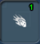
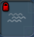

目次 > ゲームについて > シミュレーション攻略 > SPORE > コレクション一覧 > 宇宙ステージ
| 概要 | 情報 | ステージ攻略 |
| コレクション一覧 | 継承アビリティー一覧 | アチーブメント一覧 |
| SPORE 攻略へ | 目次へ戻る |
| [ 細胞ステージ ] [ クリーチャーステージ ] [ 集落ステージ ] [ 文明ステージ ] [ 宇宙ステージ ] |
| [ 1 ] [ 2 ] [ 3 ] [ 4 ] [ 5 ] [ 6 ] |
| 宇宙船のツール(惑星の大気ツール) |
| 名前 | 画像 | 値段 | 入手条件 | 効果 |
| 雲散布装置 | 大地のカウボーイ2、もしくは帝国2 | 使用した惑星の大気圧を上げる | ||
| 雲の吸引装置 | 大地のカウボーイ2、もしくは帝国2 | 使用した惑星の大気圧を下げる | ||
| 冷凍光線 | 大地のカウボーイ3、もしくは帝国3 | 使用した惑星の気温を下げる | ||
| 熱光線 | 大地のカウボーイ3、もしくは帝国3 | 使用した惑星の気温を上げる | ||
| 大気調整装置 | 大地のカウボーイ5、もしくは帝国5 | 使用した惑星の気温を下げ、大気圧を上げる | ||
| 熱雲散布装置 | 大地のカウボーイ5、もしくは帝国5 | 使用した惑星の気温を上げ、大気圧も上げる | ||
| 熱雲の吸引装置 | 大地のカウボーイ4、もしくは帝国4 | 使用した惑星の気温を上げ、大気圧を下げる | ||
| 冷たい雲の吸引装置 | 大地のカウボーイ4、もしくは帝国4 | 使用した惑星の気温を下げ、大気圧も下げる | ||
| 大気製造装置 | ミッショニスタ1、もしくは帝国1 | 使用した惑星の大気圧を上げる(消耗品) | ||
| 干ばつ発生装置 | ミッショニスタ1、もしくは帝国1 | 使用した惑星の大気圧を下げる(消耗品) | ||
| 氷の嵐 | ミッショニスタ2、もしくは帝国2 | 使用した惑星の気温を下げる(消耗品) | ||
| 流星の雨 | ミッショニスタ2、もしくは帝国2 | 使用した惑星の気温を上げる(消耗品) | ||
| 氷の水星 | ミッショニスタ4、もしくは帝国4 | 使用した惑星の気温を下げて、大気圧を上げる(消耗品) | ||
| 火山 | ミッショニスタ4、もしくは帝国4 | 使用した惑星の気温を上げ、大気圧も上げる(消耗品) | ||
| 小惑星召還 |  | ミッショニスタ3、もしくは帝国3 | 使用した惑星の気温を上げ、大気圧を下げる(消耗品) | |
| 大気凍結装置 | |
ミッショニスタ3、もしくは帝国3 | 使用した惑星の気温を下げ、大気圧も下げる(消耗品) | |
| 生命の杖 | 銀河の中心へ行く | 一瞬でテラフォームする(消耗品) | ||
| 名前 | 画像 | 値段 | 入手条件 | 効果 |
| 宇宙船のツール(惑星の彫刻ツール) |
| 名前 | 画像 | 値段 | 入手条件 | 効果 |
| 大地を上げる(小) | 大地のカウボーイ1、もしくは探索者1 | 地表を上げる | ||
| 大地を下げる(小) | 大地のカウボーイ1、もしくは探索者1 | 地表を下げる | ||
| 地表を平らに(小) | 大地のカウボーイ1、もしくは探索者1 | 地表を平らにする | ||
| 大地を上げる(中) | 大地のカウボーイ2、もしくは探索者2 | 地表を上げる | ||
| 大地を下げる(中) | 大地のカウボーイ2、もしくは探索者2 | 地表を下げる | ||
| 地表を平らに(中) | 大地のカウボーイ2、もしくは探索者2 | 地表を平らにする | ||
| 大地を上げる(大) | 大地のカウボーイ3、もしくは探索者3 | 地表を上げる | ||
| 地表を下げる(大) | 大地のカウボーイ、もしくは探索者3 | 地表を下げる | ||
| 地表を平らに(大) | 大地のカウボーイ3、もしくは探索者3 | 地表を平らにする | ||
| テラの丘 | 惑星の芸術家1、もしくは探索者3 | テラの丘を作る | ||
| テラの高原 | 惑星の芸術家3、もしくは探索者4 | テラの高原を作る | ||
| テラの噴火口 | 惑星の芸術家1、もしくは探索者3 | テラの噴火口を作る | ||
| テラのメサ | 惑星の芸術家3、もしくは探索者4 | テラのメサを作る | ||
| テラの海 |  | 惑星の芸術家5、もしくは探索者5 | テラの海を作る | |
| テラの川 | 惑星の芸術家2、もしくは探索者3 | テラの川を作る | ||
| テラの山脈 | 惑星の芸術家4、もしくは探索者5 | テラの山脈を作る | ||
| テラの渓谷 |  |
惑星の芸術家2、もしくは探索者4 | テラの渓谷を作る | |
| テラの溶岩流 | 惑星の芸術家4、もしくは探索者5 | テラの溶岩流を作る | ||
| 名前 | 画像 | 値段 | 入手条件 | 効果 |
| 名前 | 画像 | 入手条件 | 効果 |
| ギアの噴火口 | 拾う | ギアの形をした噴火口を作る | |
| ギアのメサ | 拾う | ギアの形をしたメサを作る | |
| ギアの渓谷 | 拾う | ギアの形をした渓谷を作る | |
| ギアの亀裂 | 拾う | ギアの形をした亀裂を作る | |
| 拾う | |||
| 拾う | |||
| ギアの川 | 拾う | ギアの模様の川を作る | |
| 拾う | |||
| ギアの海 | 拾う | ギアの模様の海を作る | |
| クリスタルの渓谷 | 拾う | クリスタルの突き出ている渓谷を作る | |
| 拾う | |||
| クリスタルの丘 | 拾う | クリスタルの突き出ている丘を作る | |
| 拾う | |||
| クリスタルのメサ | 拾う | クリスタルの突き出ているメサを作る | |
| クリスタルの山脈 | 拾う | クリスタルの突き出ている山脈を作る | |
| クリスタルの高原 | 拾う | クリスタルの突き出ている高原を作る | |
| クリスタルの川 | 拾う | ||
| 拾う | |||
| 拾う | |||
| キュートな壁 | 拾う | 花模様の壁を作る | |
| キュートな丘 | 拾う | 花模様の丘を作る | |
| キュートな刻印 | 拾う | 花模様を大地に描く | |
| キュートなメサ | 拾う | 花模様のメサを作る | |
| キュートな山脈 | 拾う | 花模様の連続した山脈を作る | |
| キュートな高原 | 拾う | 花模様の高原を作る | |
| キュートな川 | 拾う | 花模様が連続した川を作る | |
| キュートな海 | 拾う | 花模様の海を作る | |
| 触手の吸盤 | 拾う | ||
| 触手の口 | 拾う | ||
| 触手の丘 | 拾う | ||
| 触手の渓谷 | 拾う | ||
| 触手の腕 | 拾う | ||
| 触手の高原 | 拾う | ||
| 拾う | |||
| 触手の海 | 拾う | ||
| 触手の川 | 拾う | ||
| チョコレート・ヒル | 拾う | ||
| チョコレートスクエア | 拾う | ||
| 拾う | |||
| チョコレートの岸辺 | 拾う | ||
| 渦巻きチョコの川 | 拾う | ||
| 渦巻きチョコの海 | 拾う | ||
| チョコレートトリュフ | 拾う | ||
| チョコレートの螺旋 | 拾う | ||
| チョコレートボックス | 拾う | ||
| 名前 | 画像 | 入手条件 | 効果 |
| [ 1 ] [ 2 ] [ 3 ] [ 4 ] [ 5 ] [ 6 ] |
| [ 細胞ステージ ] [ クリーチャーステージ ] [ 集落ステージ ] [ 文明ステージ ] [ 宇宙ステージ ] |
| 概要 | 情報 | ステージ攻略 |
| コレクション一覧 | 継承アビリティー一覧 | アチーブメント一覧 |
| ページの上部へ | SPORE 攻略へ | 目次へ戻る |